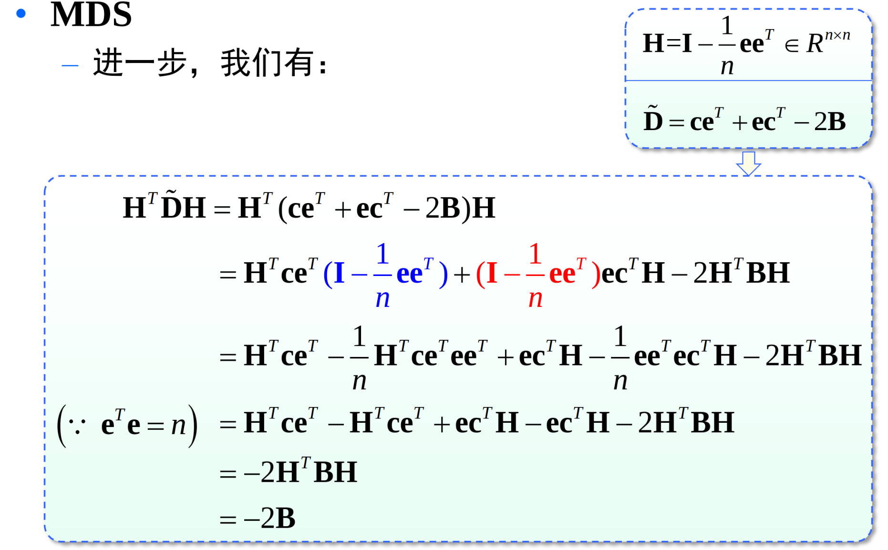
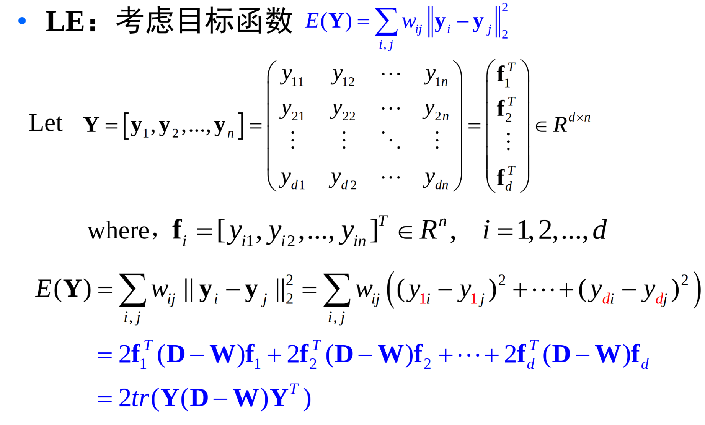

特征变换与特征选择
多维缩放
假设 n 个样本在原始空间的距离矩阵为 D。目标：获得这 \(n\) 个样本在 \(d\) 维度空间向量表示Z。使得降维后的样本扔保持两两之间的距离。
\(B = Z^TZ\)，记为样本点在新表示下的内积。\(c = [||z_1||_2^2,||z_2||_2^2,...,||z_n||_2^2]^T\) 为样本点在新表示下模长的平方。
则 \(D = ce^T + ec^T + B\)，其中 \(e = [1,1,...,1]^T\)
不失一般性，令降维后的样本是零均值化的。引入数据零均值化矩阵：\(H = I - \frac{1}{n}ee^T\)。
则：\(ZH = Z(1 - \frac{1}{n} ee^T) = Z - \frac{1}{n}Zee^T = Z\)
\(H^TBH = H^TZ^TZH = Z^T Z = B\)

于是有 \(B = - \frac{1}{2} H^T D H\)，然后获得矩阵B之后，因为 \(B = Z^T Z\)，则对B进行特征值分解，令 \(Z = \Lambda^{1/2} U\)。（其实就是正定矩阵的分解）
流形学习
流形是一块一块欧式空间拼装而成的弯曲空间。流形是高维空间中的几何对象，其局部特征与欧式几何空间相似，但在全局范围可能具有复杂的拓扑结构。
如果通过线性投影将高维数据降低到低维将难以展开非线性结构。
基本思想：高维空间相似的数据点，映射到低维空间距离也是相似的。
Isomap
Isometric feature mapping (Isomap)
通过最近邻等方式构造一个数据图。然后计算任意两个点之间的最短路径(测地距离)。对于所有的任意两个点对，期望在低维空间中保持其测地距离。
算法步骤就是将点x的k个近邻距离设置为欧式距离，非近邻点的距离设置为无穷大。 调用最短路径算法计算任意两样本点 \(x_i\) 与 \(x_j\) 之间的距离 \(d_{ij}\)。然后调用 MDS 算法。 MDS 算法的计算结构作为低维嵌入。
LLE
Locally linear embedding (LLE)
同样的通过最近邻等方式构造一个数据图。在每一个局部区域，高维空间中的样本线性重构关系在低维空间中均得以保持（保持邻近关系）。
\(\min_{w_i} ||x_i - \sum_j w_{i,i_j} x_{i_j}||_2^2,s.t. \sum_j w_{i,i_j} = 1\)
通过拉格朗日乘子法，可以得到线性表示系数的解。\(w_i = \frac{(X_i^T x_i)^{-1}e}{e^T (X_i^T X_i)^{-1} e}\)
全局嵌入：利用原始空间中获得的局部线性重构关系，在低维空间中重构相应的样本点：\(y_i = \sum_j w_{i,i_j} y_{i_j}\)
那么目标函数为：\(\min_Y \sum_i ||y_i - \sum_j w_{i,i_j} y_{i_j} ||_2^2 = ||Y-YW^T||_2^2\)
那么就是最小化 \(\min_Y tr(Y(1-W)^T (1-W) Y^T),s.t. Y Y^T = I\)
对矩阵 \((I-W)^T(I-W)\) 进行特征值分解，去除矩阵最小的d+1个特征值对应的特征向量，丢弃特征值零对应的分量全相等的特征向量。即采用第2至第d+1个最小的特征值对应的特征向量组成样本的新的坐标。
LE
Laplacian Eigenmaps (LE)
在每一个局部区域，计算点与点之间的亲合度（相似度），期望点对亲和度在低维空间中也得到保持。
亲合度 \(w_{i,i_j} = exp(-\frac{||x_i - x_{ij}||_2^2}{2 \sigma^2})\)
为了保持矩阵的对称性，可以令 \(W = (W^T + W) / 2\)
如何在低维空间中保持亲和度， \(E(y)= \sum_{i,j} w_{ij} ||y_i - y_j||_2^2\)，这里令 D 为度矩阵，其中 \(d_i = \sum_j w_{i,i_j}\)，是个主对角矩阵。

\(min E(Y) = tr(Y (D-W) Y^T),s.t. YY^T = 1\)
令 \(L = D - W\)，其中 L 有一个特征值为0，对应的特征向量全为1，因为矩阵的自身性质(Le = 0e)。
算法步骤，需要先确定近邻参数k,低维空间d。然后确定 \(x_i\) 的 k 个近邻，确定亲合度矩阵 \(W\)，计算度矩阵 \(D\)。然后采用D-W的第2至d+1个最小的特征值对应的特征向量组成低维嵌入Y。
LPP
Locality preserving projections(LPP)
是LE的线性近似，但同时具备流形学习方法和线性降维方法的优点。
构建原空间中各样本点对之间的亲合度关系，并在线性投影中保持这种亲合度。在降维的同时保持原空间中样本的局部结构，即近邻避免样本集在投影空间中发散，保持原来的近邻结构。在低维空间中最小化近邻样本间的距离加权平方和。
对样本集先引入一个线性变换 \(y = V^Tx\)，在该线性变换下，希望保持样本的原来的近邻关系。
对于 \(LE\) 算法来说，需要 \(\min_Y tr(Y (D - W) Y^T)，s.t. YY^T = I\) .
引入线性变换 \(Y = V^T X\)，则得到LPP学习模型 \(\min_v tr(V^T X(D-W) X^T V),s.t. V^T V = I\)
处理好局部关系是构造新的流形学习算法的关键。
统一的学习模型
目标：给定高维数据，寻找其低维表示。
学习模型：\(y_i \subset R^d\)
\(\min_Y trace(YMY^T),s.t. YY^T = I\)，其中\(M\) 为图拉普拉斯矩阵。
任务：构造矩阵M，与数据图构造和局部描述紧密相关。
流形学习中一些挑战问题
- 低维本质维数的确定
- 如何构建一个好的数据图
- 如何将新样本嵌入到已有的低维结构中去，即所谓的 out-of-sample problem
- 超大规模计算
特征选择
特征变换：从一组已有特征进行变换，得到新特征的过程。可以降低特征空间的维度，减少特征之间可能存在的相关性，处理高维数据的两大主流技术之一。
特征选择任务：给定一个学习任务，对于给定的数据特征集，从中选出与任务相关的特征子集。
也可以减少数据维度。通过去除与任务不相关特征、冗余特征或者关联性较小的特征，降低学习任务的难度。
总体技术路线：
子集搜索：从特征集合中搜索最优的特征子集。
子集评价：对给定的特征子集，依据某种评价准则，对其优劣进行评价。
特征子集评价判据：评价一组特征性能好坏的标准. 直接判据：分类器的分类错误率。间接判据：与分类器的分类性能存在一定关系的判据。
基于距离的评价准则，核心思想是使类内散度尽可能小，类间散度尽可能大。
基于分布的评价准则：基于类条件概率密度函数。
子集搜索是典型的组合问题（组合爆炸）。若从d个特征中选择m个，则特征的组合数目为：\(\frac{d!}{(d-m)!m!}\).
子集搜索策略可以分为: 穷举法，前向搜索策略，后向搜索策略，双向搜索策略，随机搜索策略。
分支定界法：将所有可能的特征组合以树的形式进行表示，采用分支定界方法对树进行搜索，使得搜索过程尽早达到最优解，而不必搜索整个树。但是需要特征评价准则对特征具有单调性。
特征选择的次优方法
过滤式特征选择方法：单独特征选择法、顺序前进特征选择法、顺序后退特征选择法、增l减r特征选择法。
包裹式特征选择法
嵌入式特征选择方法
过滤式方法先对数据集进行特征选择，再训练分类器。
特征选择过程与后续学习器无关；启发式特征选择方法，无法获得最优子集；与包裹式选择方法相比，计算量降低了很多。
包裹式特征选择方法，特征选择过程与分类性能相结合，特征评价判据为分类器性能。
嵌入式特征选择方法：基于L1范数的特征选择。